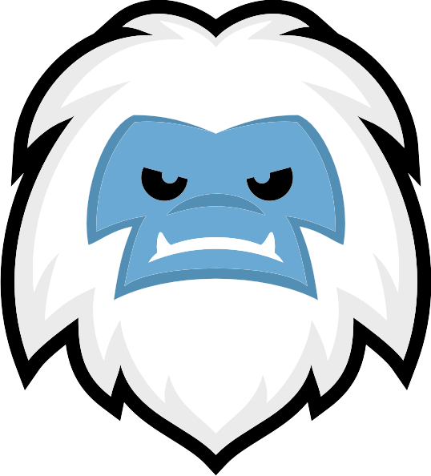

coolFTPSay "deploy this". Only changed files go up, the commit is recorded, the site is verified. You watch it happen live.
› deploy this ⏺ coolftp_deploy(message: "nav fix") ↑ index.html 4.1 KB ↑ css/site.css 12.8 KB · 214 unchanged, skipped ✔ Deployed in 1.8s (a91c2e0) ✔ 200 https://coolftp.com/
Say "deploy this". Only changed files go up, the git commit is recorded, and the site is verified. You watch it happen live in the app.
› deploy this ⏺ coolftp_deploy(message: "nav fix") ↑ index.html 4.1 KB ↑ css/site.css 12.8 KB · 214 unchanged, skipped ✔ Deployed in 1.8s (a91c2e0) ✔ 200 https://coolftp.com/